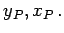

Inhalt Index DeskTop Bronstein

 Geometrie Ebene Trigonometrie Geodätische Anwendungen Geodätische Koordinaten
Geometrie Ebene Trigonometrie Geodätische Anwendungen Geodätische Koordinaten


Im ebenen linkshändigen rechtwinkligen Koordinatensystem der Geodäsie ist die x-Achse die nach oben weisende Abszisse, die y-Achse die nach rechts weisende Ordinate.
Ein Punkt P besitzt die Koordinaten  Die Ausrichtung der x-Achse erfolgt nach praktischen Erwägungen. Bei Messungen über größere Distanzen, für die meist das SOLDNER-SYSTEM oder das GAUSS-KRÜGER-System verwendet wird, zeigt die positive x-Achse nach Gitter-Nord, die nach rechts weisende y-Achse nach Osten. Die Zählung der Quadranten erfolgt im Gegensatz zu der in der Geometrie sonst üblichen Praxis im Uhrzeigersinn.
Wenn neben der Punktlage in der Ebene auch Höhen anzugeben sind, kann ein dreidimensionales linkshändiges rechtwinkliges Koordinatensystem (y,x,z) verwendet werden, in dem die z-Achse, in den Zenit zeigt.